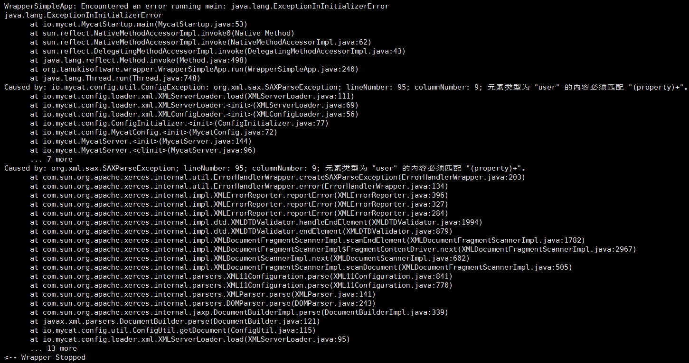

在mycat中，可以通过对server.xml文件里的user段下的privileges段进行配置，而从进行更细化的权限控制。
但是在实际操作中，配置了property段后，mycat却会报出配置文件错误的信息。
我们可以在错误日志中看到具体的信息

错误显示元素类型为"user"的内容必须匹配"(property)+"。
显然是我们添加了privileges标签导致的错误，而mycat却要求user下必须匹配property标签，一定是在校验xml的时候出来问题。
我们查看github中mycat的源码，在src/main/resources目录下的server.dtd文件中我们可以看到对server.xml的校验是<!ELEMENT user (property+,privileges*)>
这一行说明在user段下是允许使用privileges标签的，但是必须在property之后，显然我们的配置是符合规范的，可是我们运行mycat是却会报错。
我们再来查看我们部署的mycat中server.dtd文件是怎么写的，
在mycat目录下的lib/Mycat-server-1.6-RELEASE.jar包中我们可以看到server.dtd文件显示的是<!ELEMENT user (property+)>
这和github中的不一样，这个校验只允许property标签。
问题的原因就是，官方最新打包的程序中的配置和github中的源码不一致，并且不支持privileges标签。
那么解决的方法就很简单了，将github中的server.dtd文件替换掉jar包中的相应文件，然后重新部署。
至此，问题解决。